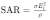
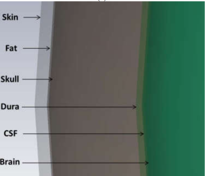

Caution:
* SAR is provided only for sub six (1-6) GHz frequencies.
* The values obtained are numerically computed using Transmission Line Method, where 7 Layer head model was considered.
* For further understanding of SAR and Transmission Line Method, please go to About SAR section.
Specific Absorption Rate is the amount of energy absorbed per unit kg of brain tissue, when the brain is exposed to Radio Frequency produced by devices like mobile phone. It is measured in W/kg.

Where:
σ is the electrical conductivity of the tissue (S/m),
E is the magnitude of the electric field strength in the tissue (V/m),
ρ is the mass density of the tissue (kg/m³).
To measure SAR there are many approaches, where we used Transmission Line Method (TLM)
A seven layered head model was considered: Skin, Fat, Bone, Dura, Cerebra spinal fluid, White matter, Gray matter.
The Transmission Line Method (TLM) is used to model how electromagnetic waves interact with multi-layered biological tissues. It calculates the electric field distribution within these tissues, providing key data to compute Specific Absorption Rate (SAR) at varying depths. This allows for an accurate assessment of how deeply electromagnetic waves penetrate and affect biological structures. In parallel, Shielding Theory quantifies how effective certain materials are at attenuating electromagnetic fields, with Shielding Effectiveness (SE) measured in decibels (dB). SE depends on factors such as material conductivity, thickness, permittivity, and frequency, helping to design structures that reduce electromagnetic exposure. By combining TLM, Shielding Theory, and SAR, a holistic approach is developed to understand electromagnetic wave propagation, assess health risks, and guide the design of safer environments, particularly in telecommunications, medical, and industrial fields.
The International Commission on Non-Ionizing Radiation Protection (ICNIRP) recommends that mobile phones have a Specific Absorption Rate (SAR) of no more than 2 watts per kilogram (W/kg). This limit is intended to prevent adverse health effects.
If the SAR exceeds the recommended 2 W/kg limit, potential health risks include:
- Increased tissue heating, especially in the head and brain, leading to discomfort or headaches.
- Prolonged exposure could cause thermal damage to tissues, affecting cell structure and function.
- High SAR levels may cause skin irritation or burns from heat during direct contact.
- Long-term exposure has raised concerns about a potential increased risk of brain tumors, though research is ongoing.
- Sleep disturbances and cognitive effects like memory impairment and concentration difficulties have been associated with high SAR exposure.
Hence Research in this field is very crucial for understanding health risks, establishing safety guidelines, developing safer technologies, addressing public concerns, assessing long-term impacts, innovating shielding techniques, and informing policy decisions.